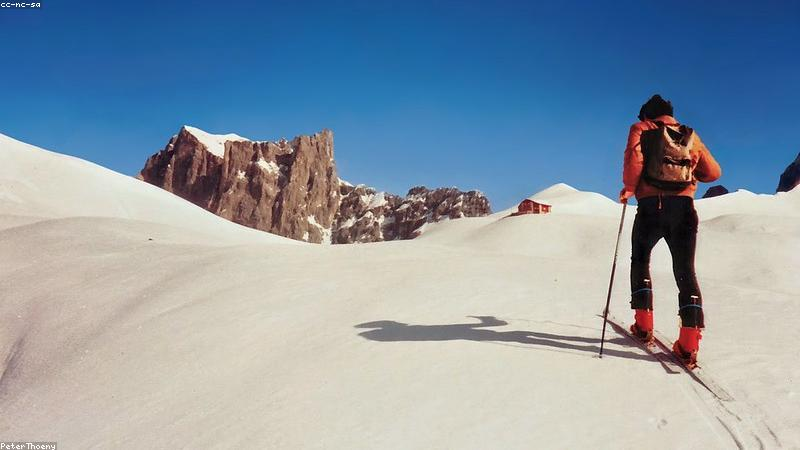

NO. 21 · 勵志
翻過那座山
起點不重要，重要的是你沒停下腳步。
他四十歲才第一次爬山，膝蓋不好，爬三百階就喘。同行年輕人把他遠遠甩在後頭。
他坐下休息，心想：『我都這把年紀了，何必。』但望著山頂，他又站起來。
那天天黑前他登頂了——最後一個，卻是笑得最大聲的。他說：『我不是來贏的，是來證明我還能動。』
後來他每週都爬，一年後能中途不歇。山還是那座山，變的是他不肯認輸的那口氣。

他四十歲才第一次爬山，膝蓋不好，爬三百階就喘。同行年輕人把他遠遠甩在後頭。
他坐下休息，心想：『我都這把年紀了，何必。』但望著山頂，他又站起來。
那天天黑前他登頂了——最後一個，卻是笑得最大聲的。他說：『我不是來贏的，是來證明我還能動。』
後來他每週都爬，一年後能中途不歇。山還是那座山，變的是他不肯認輸的那口氣。